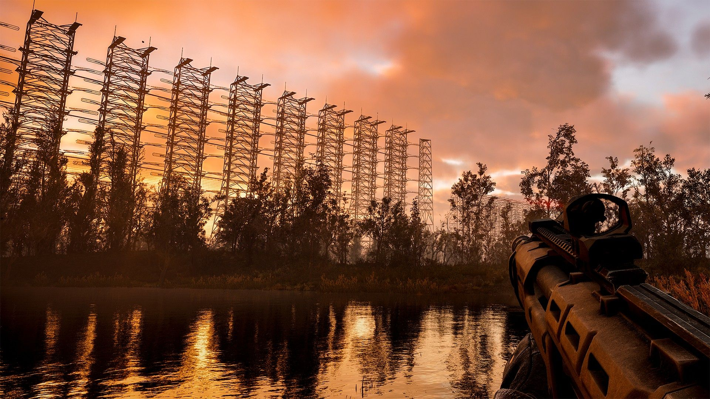
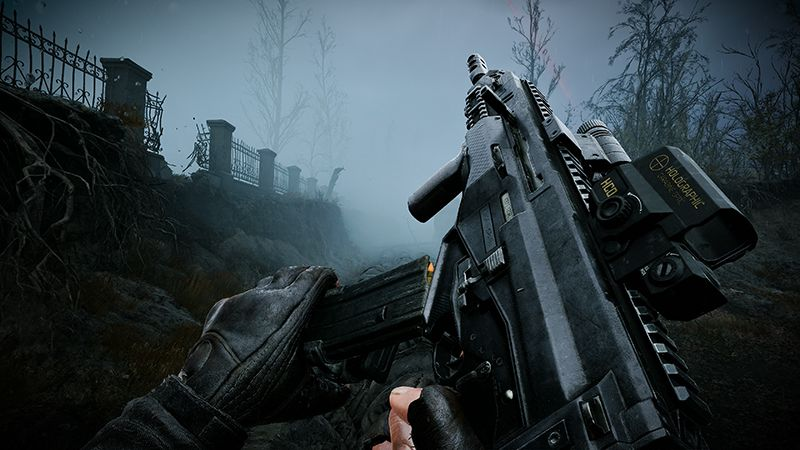

Patch 1.2
Stalkers!
We are ready to present you Patch 1.2 A massive one, with over 1700+ improvements and fixes to all
aspects of the game: balance, locations, quests, blockers, crashes, performance, more A-Life 2.0
fixes, you name it. This work wouldn’t have been possible without your feedback and comments on your
personal experience with the Zone, thanks for sharing it here on Steam, Reddit, Discord, and other
socials.
Let’s not waste time and jump straight to the long list of updates, shall we?
Read more

Just the Beginning Trailer
The Chornobyl Exclusion Zone is a mesmerizing and ever-changing marvel,
unique in its atmosphere and emotions throughout the year. Spring is always exceptionally charming.
After the harsh winter season, it’s time to take a deep breath of fresh air.
Read more

Flip Side of the Zone
Local depths hold more than just artifacts and relics. They hold
forgotten ambitions and dangerous knowledge, bearing scars from experiments that blur the line
between science and madness.
Read more